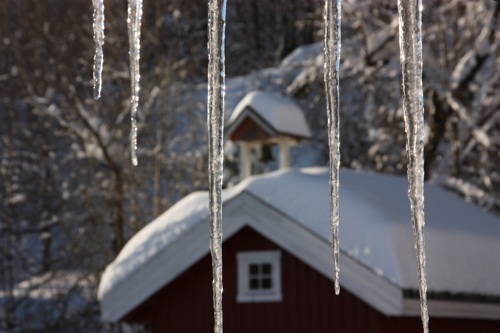

PREP-kurs på Aarholt-tunet. PÅMELDING, DATOER, PRIS, INFO:
Kursene er utsatt på ubestemt tid pga Covid-19.
De store ukesarrangementene vi skulle tatt imot våren 2020 er flyttet til vinteren og berører perioden fra slutten av nov til mars som er den tiden på året vi har brukt å ha Prep-kurs.
Hjertelig velkommen på Prep-kurs - ved en senere anledning!
Til en venteliste trenger vi navn på begge i parforholdet, adresse, telefonnummer og epost.
Dette kan mailes til
samlivskurs@aarholt-tunet.no
eller ringes inn til
tlf.nr. 33 33 90 96.
Vi svarer gjerne på spørsmål dere måtte ha.

Antall deltakere på et kurs
Opptil ca 15 par pr. kurs.
Arrangører er Aarholt-tunet Gjestegård og organisasjonen "Voksne for barn". Kursprisen er sponset av "Barne-, ungdoms- og familiedirektoratet", og av arrangørstedet Aarholt-tunet Gjestegård.
Tidspunkter for selve kurset.
På Aarholt-tunet Gjestegård holdes
PREP-kurset som et helgekurs over TO døgn, TRE dager. Ankomst og innsjekking med litt mat og kaffe fredag kveld fra
kl.18.00. Selve kurset går
fra kl.18.30 til kl. 22.00 (inkludert i tiden er et suppe-måltid med brød). Lørdag fra kl
09.15 og fram til ca. kl.18.00. (inkl. i tiden er kaffemåltider og lunsj).
Søndag fra kl. 09.15 fram til ca. kl.15.30. (inkludert i tiden er kaffemåltider
og lunsj). De som overnatter får i
tillegg frokoster og middag.
Parene kan velge om de vil bo på stedet eller bo hjemme. En får
med seg samme kursinnhold, men fordelen ved å bo på stedet er blant annet ro til å "være" i kurset med hele
seg uten forstyrrelser fra barn, telefon, andre gjøremål.
Modum Bad
Kursopplegget er oversatt og tilpasset norske forhold av ”Modum Bads Senter for familie og samliv" Kursene på Aarholt-tunet er også subisidert av Bufdir. via arrangør Org. Voksne for Barn.
